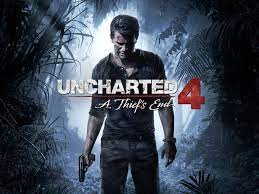
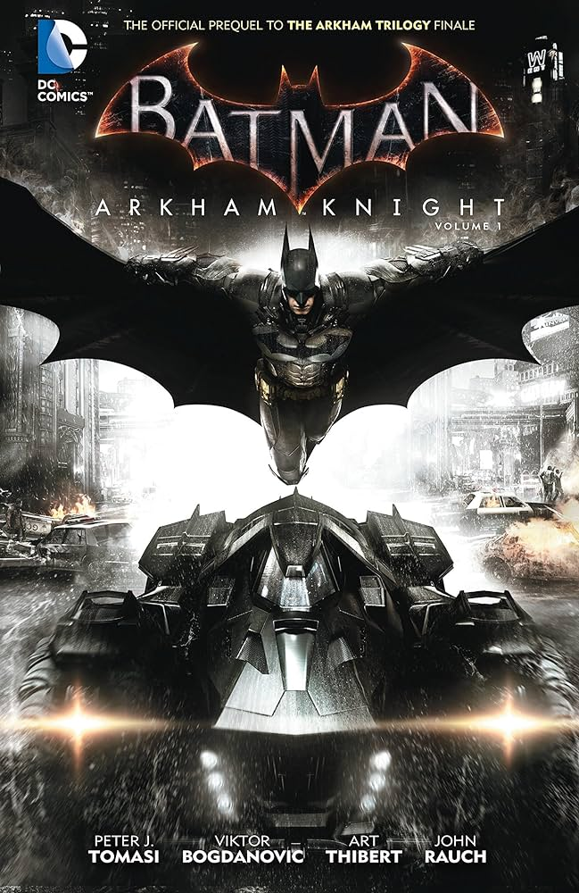
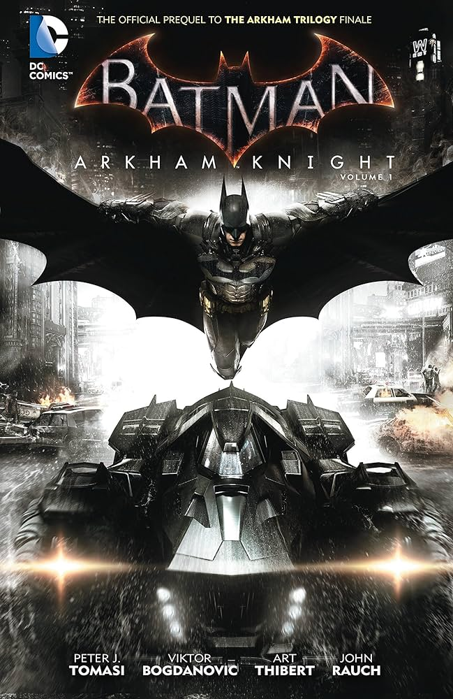
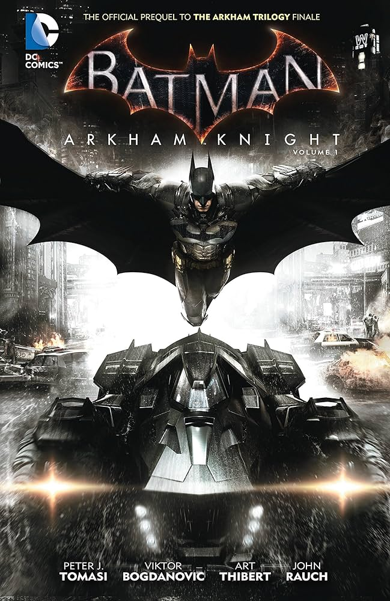
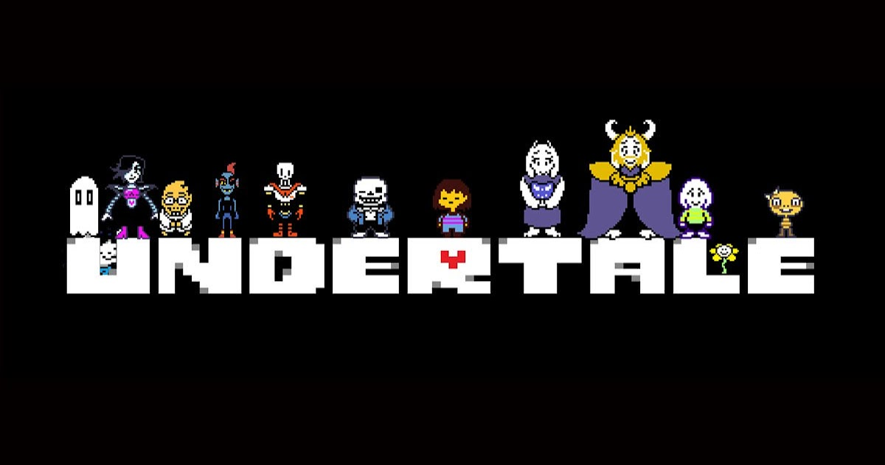

O meu primeiro contato com os jogos foi em meados de 2009, quando eu ganhei o meu primeiro vídeo-game: o Playstation 2. Simplesmente foi amor à primeira vista. Ver os pixels na tela ganhando vida foi uma experiência sensacional., principalmente quando eu ganhava jogos como GTA, PES, Call of Duty e vários outros.
Um jogo que me marcou nessa época foi um CD que vinha com vários jogos clássicos, como Super Mario, Sonic, Donkey Kong, Street Fighter, etc. Eram bons tempos.

PES 2013 - Um dos jogos que eu mais joguei na época do PS2
Depois de bons 4 anos, vendi meu PS2 para comprar o X-Box 360, uma grande evolução. Esse foi o período que eu mais joguei na minha vida, com diversos jogos que me marcaram que nem dá para listar aqui.
Dos que eu posso citar: FIFA, PES, The Evil Within, COD Black Ops, Batman Arkham, Minecraft, LEGO, e a lista continua.
Foram 7 anos jogando no X-Box 360, em que foi uma das melhores épocas da minha vida.

X-Box 360 e alguns de seus jogos
Após a venda do antigo console, fiquei um período sem um vídeo-game. Me acostumei, mas queria ter um para passar o tempo.
Então, no meu aniversário de 17 anos, em 2021, meus pais me presentaram com o PS4. Junto a isso, vieram mais três jogos: Uncharted, Horizon Zero Dawn e FIFA 18.
Contudo, estou até agora com o PS4, onde eu encontro jogos incríveis, como Uncharted: Lost Legacy, The Evil Within 2, Batman Arkham Knight, God of War 2018, entre muitos outros.


 


Os melhores jogos que eu joguei no PS4
Também jogo no PC, mas com menor frequência. Um jogo que joguei no PC e que posso citar facilmente: Undertale, com certeza um dos melhores jogos que eu já joguei.

Um jogo maravilhoso: Undertale